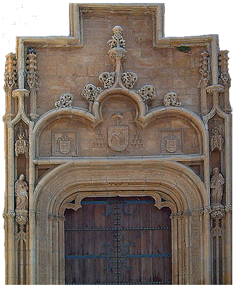

Thursday Abad
HAD/LIS Graduate Student at Pratt Institute

Welcome to my website...

I’m a current art history and library sciences graduate student at Pratt Institute. I received my Bachelor’s in art history and museum professions from the Fashion Institute of Technology in 2025 and hope to work in archiving or collections management after graduation.
I have interned at two historic house museums, where my responsibilities focused on collections management and house tours. During both of these internships, I learned how to use digital and analog archiving methods, such as using the program PastPerfect and filling out book tabs for the museum's library.
Outside of classes, I enjoy visiting art museums with my friends, especially ones focused on modern and contemporary art. I also like to play video games and watch TV to unwind after a long day of work.
© Thursday Abad 2026